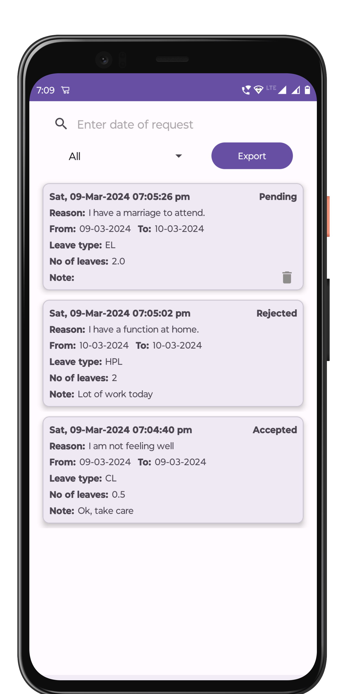

Employer Version
Elevate Employer satisfaction with our user-centric leave management app, offering hassle-free leave requests and instant balance updates. Empower your workforce to manage time-off efficiently, fostering a culture of productivity and well-being.
Home
Leave Requests: Easily request various types of leaves such as Casual Leave (CL), Half-Pay Leave (HPL), and Earned Leave (EL) through our user-friendly interface.Leave Balance: Stay informed about your current leave balances and availability, empowering you to plan your time off effectively.
Check-In/Check-Out: Conveniently record your presence with our Check-In and Check-Out feature, ensuring accurate timekeeping and attendance tracking.
Logs: Access detailed logs containing the history of your check-ins and check-outs for transparent accountability and record-keeping purposes.

History
Leave Request History: Access a comprehensive history of all leave requests submitted to date, categorized into accepted, rejected, and pending statuses for easy reference.Segregation: Leaves are conveniently segregated based on their current status, allowing users to quickly identify the progress of their requests.
Export Functionality: Seamlessly export your leave request history into .xls files with just a single click, enabling effortless data management and analysis.
Notices
Timely Updates: Stay informed about important announcements and updates from the administration by accessing the notices page regularly.Search Functionality: Utilize search functionality to quickly find specific notices based on keywords or dates, enhancing user convenience.